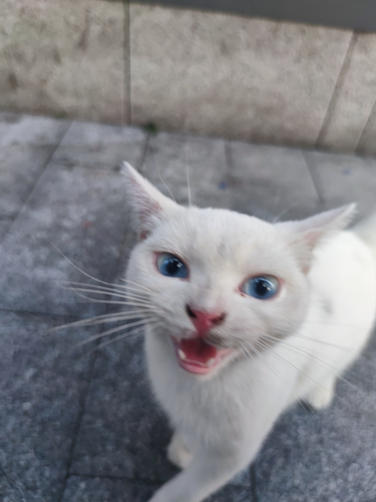

日光之下，有一件虚空的事：一只白猫，蹲在路旁，无所经营，也无所积蓄，安静观看来往的人。


有声音呼唤它，它便起身近前；既来到，便在人脚边徘徊，仿佛世上并无别的要事。
人终日奔走，为尚未得着的劳苦；猫却在静止中数算自己的日子，知道这一切尽是捕风。


所以猫的片刻安闲，胜过人的许多谋算；一声呼唤所得的欢喜，也胜过远方未到的明日。
日光之下，有一件虚空的事：一只白猫，蹲在路旁，无所经营，也无所积蓄，安静观看来往的人。

有声音呼唤它，它便起身近前；既来到，便在人脚边徘徊，仿佛世上并无别的要事。
人终日奔走，为尚未得着的劳苦；猫却在静止中数算自己的日子，知道这一切尽是捕风。
所以猫的片刻安闲，胜过人的许多谋算；一声呼唤所得的欢喜，也胜过远方未到的明日。
留言